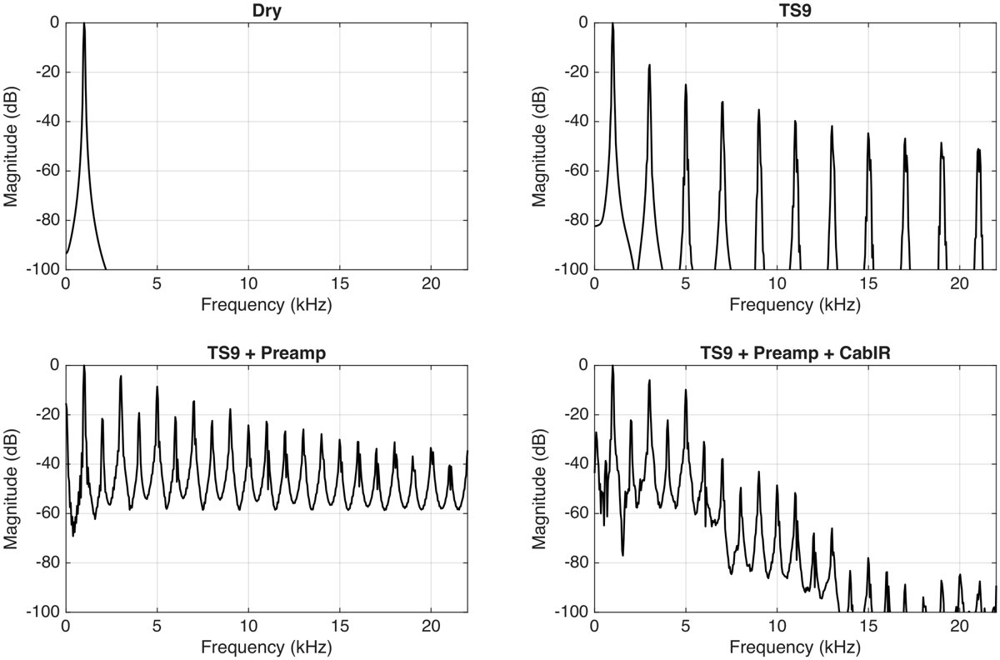

High-gain guitar amplifier model
A virtual-analogue chain built stage by stage: a TS9-style overdrive, a four-stage biased tube preamp with a Bassman tone stack, and cabinet IR convolution. Listen to what each stage adds.
Preset
Signal
MSc module: Modelling and Analysing Sound and Music Signals